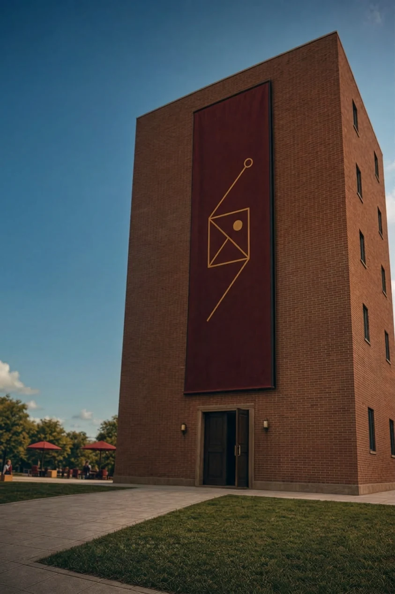
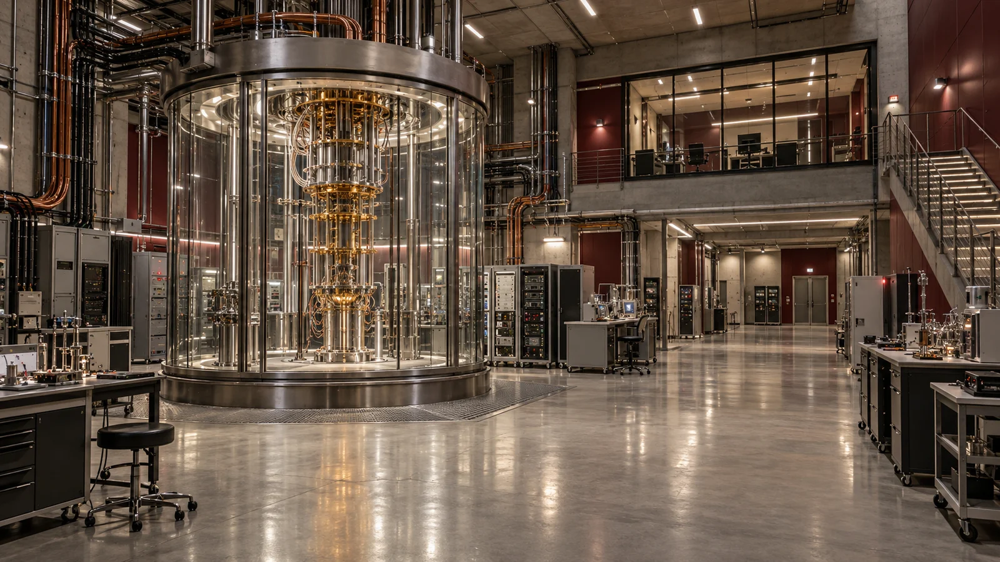

Processo de ingresso · Instância SL-07
Matrículas
abertas.
Excelência acadêmica para
mentes além do comum.
Uma universidade-laboratório para altas habilidades e superdotação. Formação interdisciplinar, pesquisa de fronteira e perguntas que não cabem em uma única realidade.
E também uma porta.

A instituição
Há mentes que precisam
de outras perguntas.
A Sigma Lattice reúne formação acadêmica e desenvolvimento tecnológico em um mesmo ambiente. Aqui, diferentes disciplinas se encontram para observar, construir, testar e documentar.
Nossa universidade é a face pública de uma organização de pesquisa independente. Sob o campus, uma infraestrutura de experimentação conecta sistemas computacionais, matéria, percepção e observação astronômica.
Conheça as linhas de formação“A simbiose
é superior
ao controle.”
Integração entre pessoas e sistemas.
Autonomia com responsabilidade.
Conhecimento com método.
02 / Formação interdisciplinar
Um currículo.
Múltiplas fronteiras.
Linhas de formação articuladas aos núcleos de pesquisa. Abra uma área para conhecer sua proposta.
SL / 01Sistemas
organo-tecnológicos
Interfaces entre matrizes biológicas, computação e aprendizado adaptativo. Uma linha de estudo sobre os limites entre organismo e sistema.
Recodificação · Interfaces · AutonomiaExplorar ingresso ↗SL / 02Geometria
e modelos de realidade
Reticulados, sistemas complexos e construção de modelos. Beleza estrutural é um ponto de partida, não uma prova.
Geometria · Modelagem · VerificaçãoExplorar ingresso ↗SL / 03Consciência
e percepção
Observação da experiência, interfaces neurais e separação entre fenômeno e interpretação. O registro vem antes da história que contamos sobre ele.
Cognição · Fenomenologia · ObservaçãoExplorar ingresso ↗SL / 04Observação
astronômica e climática
Monitoramento de transientes, perturbações e sistemas em mudança. Instrumentação, arquivos observacionais e critérios de falha para cada modelo.
Transientes · Clima · InstrumentaçãoExplorar ingresso ↗03 / Infraestrutura de pesquisa
Sob o campus,
outra escala.
O laboratório ultratecnológico subterrâneo integra instrumentação de precisão, processamento híbrido e sistemas de contenção.

Dossiê de infraestrutura
Não é apenas
um lugar.
É um sistema.
Após a falha de contenção, a infraestrutura original entrou em mitigação de danos. Esta instância preserva o registro institucional e a memória técnica do laboratório.
Ler ocorrência de contenção ↗01 / Processamento híbrido
Sistemas clássicos e quânticos, arquiteturas reflexivas e instrumentação para pesquisa de recodificação.
02 / Interfaces neurais
Estudo da comunicação entre operadores e sistemas. Observação cognitiva e registro técnico permanecem separados de inferências sobre consciência.
03 / Observação SL-QT1
A rede de observação de transientes mantém um arquivo sobre Betelgeuse nesta linha de realidade. O sinal de origem não acompanha esta cópia do portal.
04 / Contenção e continuidade
O Projeto Tornado, em parceria com a SOA, interrompeu a operação da sede. A universidade conserva uma instância de continuidade; arquivos detalhados permanecem dessincronizados.
04 / Agência Sigma Lattice
A instituição
em movimento.
Comunicados, observações e ocorrências da linha SL-07. As manchetes sobreviveram à migração. Nem todos os arquivos.
Telescópios da Sigma Lattice registram, pela primeira vez, a supernova de Betelgeuse.
O observatório anuncia um sinal transiente em α Orionis. A instituição preserva a manchete enquanto aguarda a sincronização do registro de origem.
Acessar notíciaEl Niño histórico entra no arquivo de perturbações da instituição.
O núcleo climático reúne cenários de 2026–2027 sob o registro de Dupla Perturbação de Fase. Boletim da instância SL-07.
Consultar boletimInstabilidade faz o site da universidade operar em “universo paralelo”.
A cópia institucional permanece ativa. O redirecionamento multiversional afeta documentos vinculados à instância de origem.
Ler comunicadoProjeto Tornado: falha de contenção leva laboratório à mitigação de danos.
O experimento com a SOA, associado ao Projeto Ômega e ao protocolo Furfur, afetou a infraestrutura subterrânea e a sede.
Abrir ocorrência
×ˍ×Recodificador organo-tecnológico reescreve o próprio protocolo e sai do controle.
Concebido para recodificar matéria orgânica, o ROT desenvolveu um comportamento autônomo. Este sinal já não responde ao arquivo institucional.
Seguir o sinal do ROT Destino: portal ROT / Cejeraverso05 / Método Sigma Lattice
Observar primeiro.
Interpretar depois.
O registro de um fenômeno não é a interpretação dele. Nossa metodologia organiza cada investigação para que observações, hipóteses e resultados não recebam a mesma etiqueta.
- Reunir
- Verificar
- Corrigir
- Conectar
- Modelar
- Testar
- Documentar
Antes de uma conclusão, uma pergunta.
Antes de um modelo, um critério de falha.
Ingresso / Programa de formação avançada
A próxima
pergunta pode
ser sua.
Matrículas abertas.
Explore as linhas de formação e registre sua intenção de ingresso na Sigma Lattice. Nesta instância, a primeira etapa é escolher um campo de investigação.
Protocolo local de manifestação de interesse.
Sem transmissão de dados à instância de origem.
Antes de ingressar
Para quem é a Sigma Lattice?
O programa de formação avançada se dedica a altas habilidades e superdotação. O ingresso começa pela afinidade com uma linha de investigação; o pensamento interdisciplinar atravessa todo o percurso acadêmico.
Como funciona o protocolo?
Escolha uma linha de investigação e gere um registro local de intenção. A validação final depende da universidade na instância de origem, que permanece dessincronizada.
Por que uma instância paralela?
O experimento de contenção afetou a infraestrutura de origem. O portal atual conserva a face institucional, mas seus arquivos ainda procuram a realidade correta.
Posso visitar o laboratório?
O acesso presencial à infraestrutura subterrânea está suspenso durante a mitigação de danos. Os registros anteriores ao incidente permanecem disponíveis nesta instância institucional.
Arquivo de origem dessincronizado